Orbit is a visual discovery experience that helps people explore, collect, and connect the things they love. Its identity balances bold simplicity with playful moments of discovery.
01 / BRAND STRATEGY
Brand Strategy
Orbit’s strategy centers on curiosity, individuality, and connection. It guides how the brand looks, speaks, and creates experiences, keeping each expression connected to the idea of a personal world shaped by interests. This foundation allows Orbit to explore different subjects and collaborations while maintaining a clear sense of purpose.
02 / AUDIENCE
Audience
Orbit is designed for curious, visually engaged young adults who explore their identities through music, film, fashion, art, and culture. They enjoy collecting inspiration and finding ideas that feel personal. The brand welcomes people with a wide range of interests, giving them room to explore familiar favorites alongside something unexpected.
03 / POSITIONING
Positioning
Orbit brings visual discovery and personal expression together through the connections between interests. A film might lead to an interior, a color palette, or a new artist. By encouraging these connections, Orbit becomes a place where people can build a broader understanding of their taste and find new directions to explore.
04 / PURPOSE
Purpose
Orbit exists to help people explore what interests them and discover connections along the way. By bringing visual inspiration together in one space, it encourages people to develop their taste, express themselves, and turn everyday discoveries into something meaningful.
05 / PERSONALITY
Personality
Orbit is curious, expressive, playful, and approachable. It brings energy to discovery while leaving space for individual interpretation. Its personality comes through in bold typography, candid photography, shifting color, and circular forms that make the brand feel active and open to possibility.
06 / VOICE
Voice
Orbit speaks with warmth, confidence, and curiosity. Its language is conversational and direct, using inviting questions and short, thoughtful phrases to encourage exploration. Whether introducing a new collection or guiding someone through an experience, the voice helps people feel comfortable following their interests and making their own choices.
Primary logos
PRIMARY LOGO / CREAM
PRIMARY LOGO / BLACK
The primary Orbit logo appears in both cream and black versions. Maintain the original proportions and clear space in every application.
Logomarks
LOGOMARK / CREAM
LOGOMARK / BLACK
The Orbit logomark is presented in both versions. Do not stretch, redraw, or alter the supplied artwork.
LIME
BLACK
WARM NEUTRAL
PINK TO RED
GREEN TO BLUE
Orbit’s palette pairs fresh, playful color with strong neutrals. The gradients add movement and depth. Colors shown are visual approximations of the supplied reference; replace them with approved values if precise hex codes are required.
SPACE GROTESK / PRIMARY TYPEFACE
Aa Bb Cc 0123456789
Bold for confident, left-aligned headlines.Regular for readable, ragged-right body copy.Never stretch type or justify paragraphs.
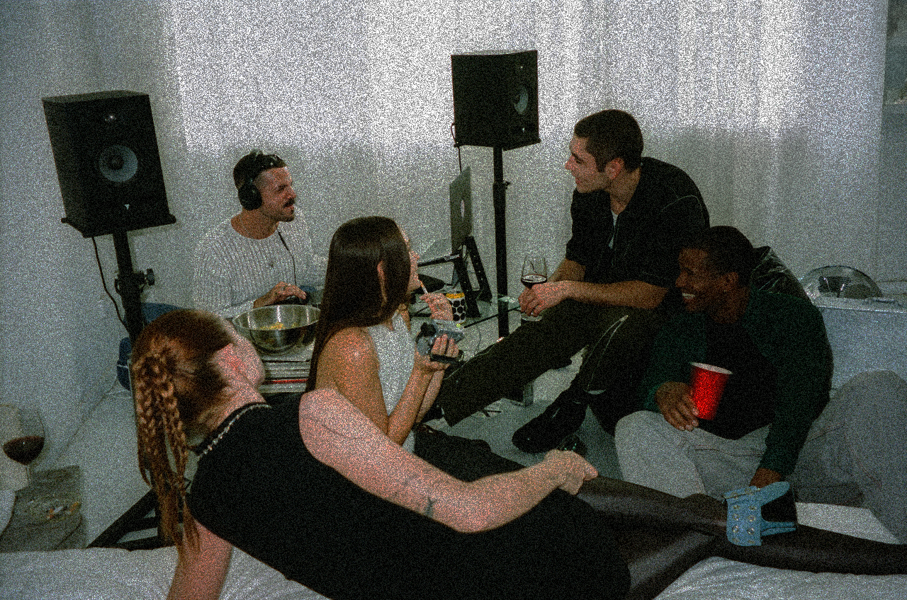
01 / PEOPLE & CONNECTION
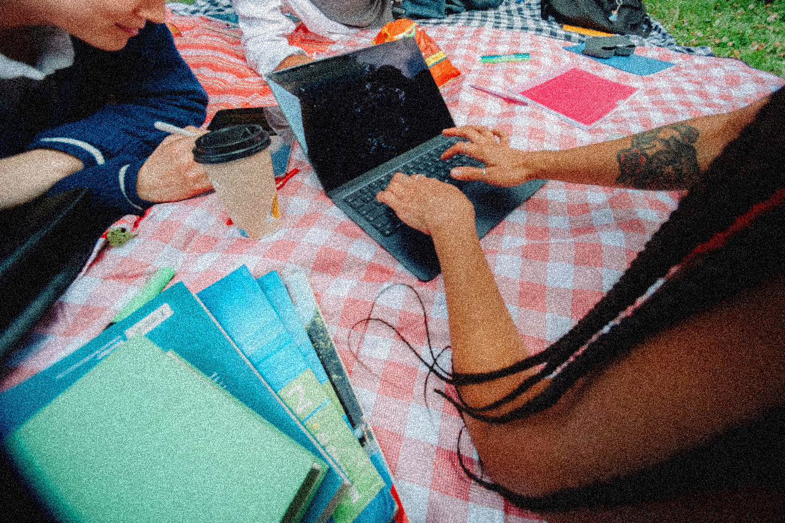
02 / EVERYDAY DISCOVERY
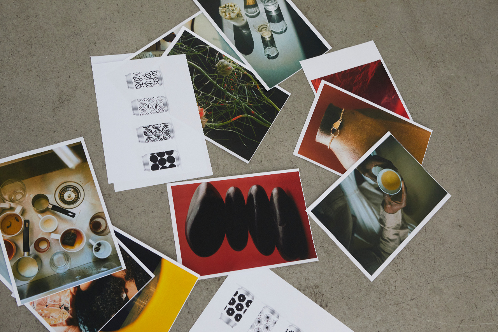
03 / OBJECTS & INTERESTS
Photography should feel candid, contemporary, and lived-in. Prioritize natural light, authentic interactions, and personal details over overly staged imagery.
02 / IN THE WORLDAPPLICATIONS & EXPERIENCES
Made to move with your world.
From digital discovery to physical experiences, Orbit’s identity is designed to travel across formats while remaining unmistakably itself.
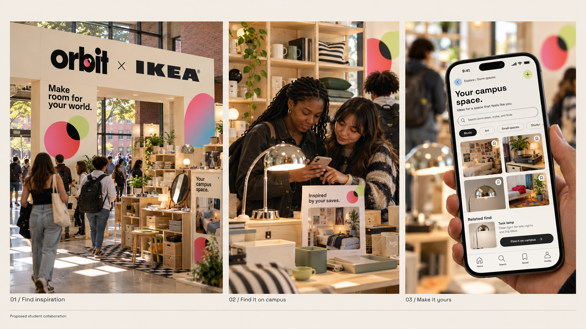
APPLICATION / 01
Orbit × IKEA
Students browse room inspiration in Orbit, then find related furnishings and objects in an IKEA campus pop-up. The collaboration shows how the things students save can shape a space that feels like their own.
Orbit × IKEA
01 / 10
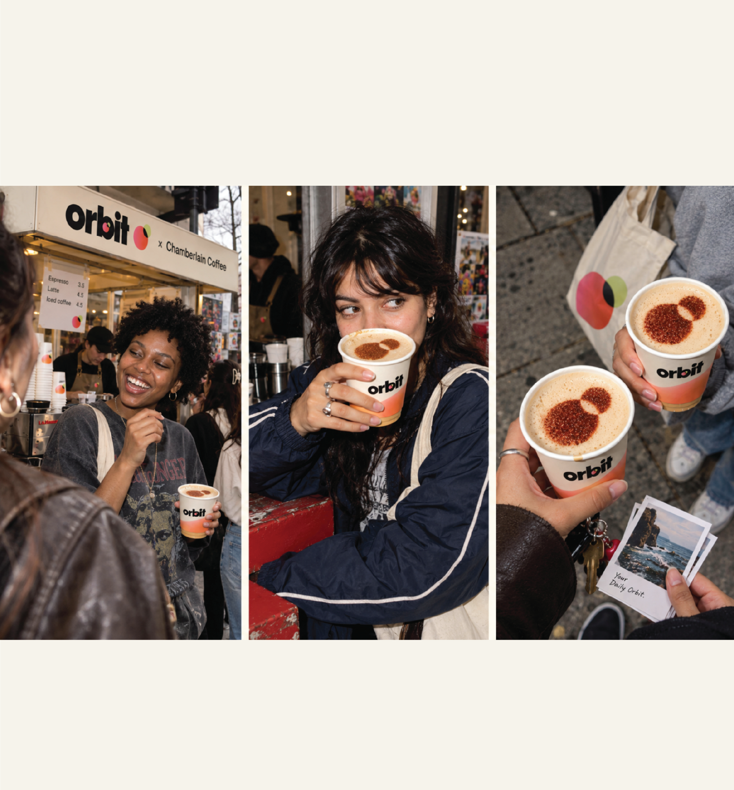
APPLICATION / 02
Orbit × Chamberlain Coffee
The coffee pop-up carries Orbit’s two-circle mark from the storefront to the cups and even into the cocoa dusting. Candid photography connects the identity to the everyday rituals and social moments Orbit is built around.
Orbit × Chamberlain Coffee
02 / 10
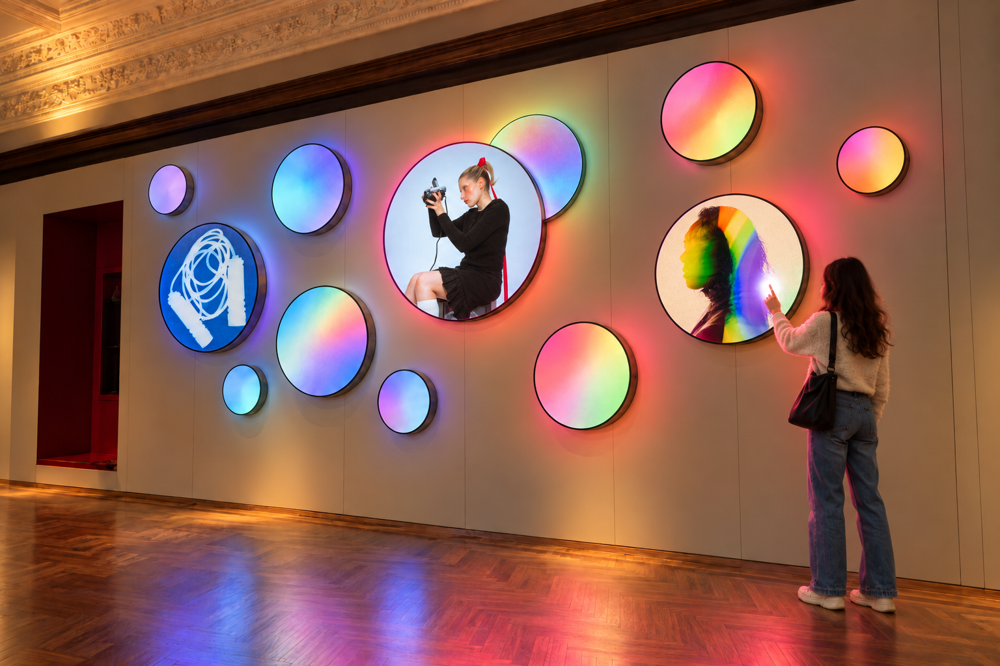
APPLICATION / 03
Interactive Gallery
An illuminated wall pairs bold photography with glowing gradient circles. The different sizes and overlaps echo Orbit’s two-circle mark and invite visitors to move closer and explore the images through touch.
Interactive Gallery
03 / 10
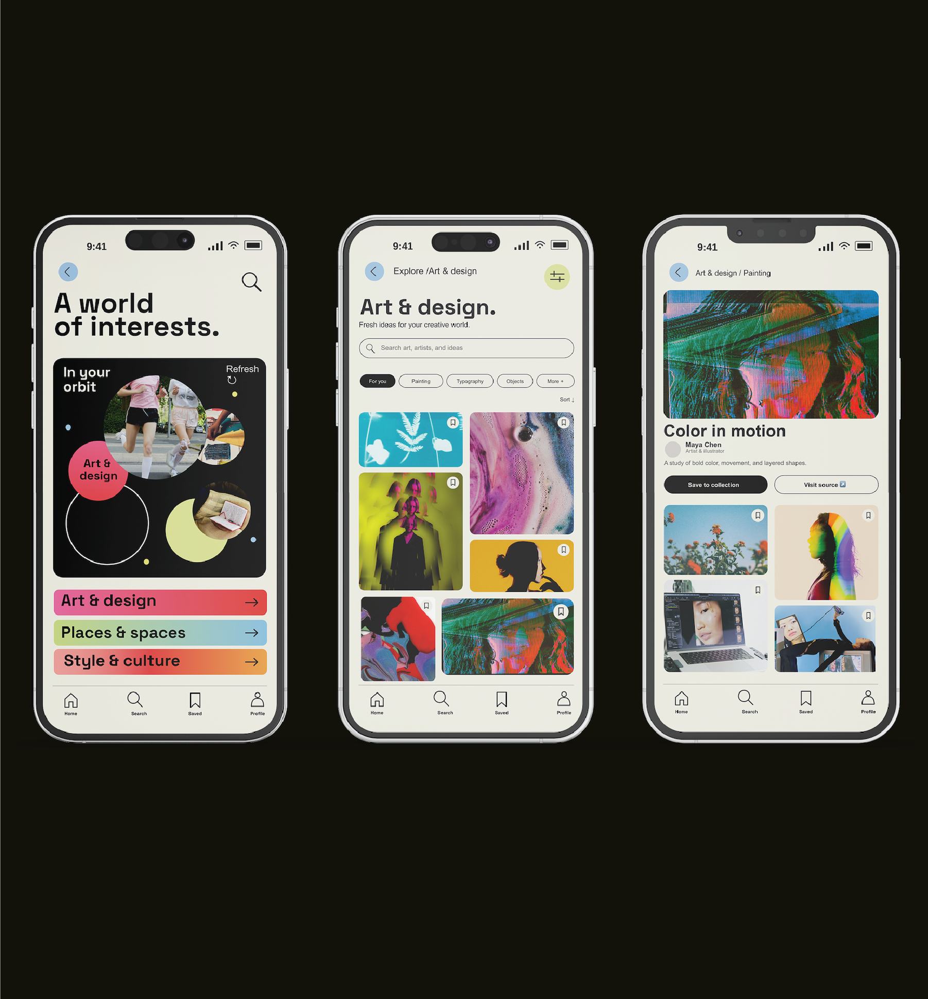
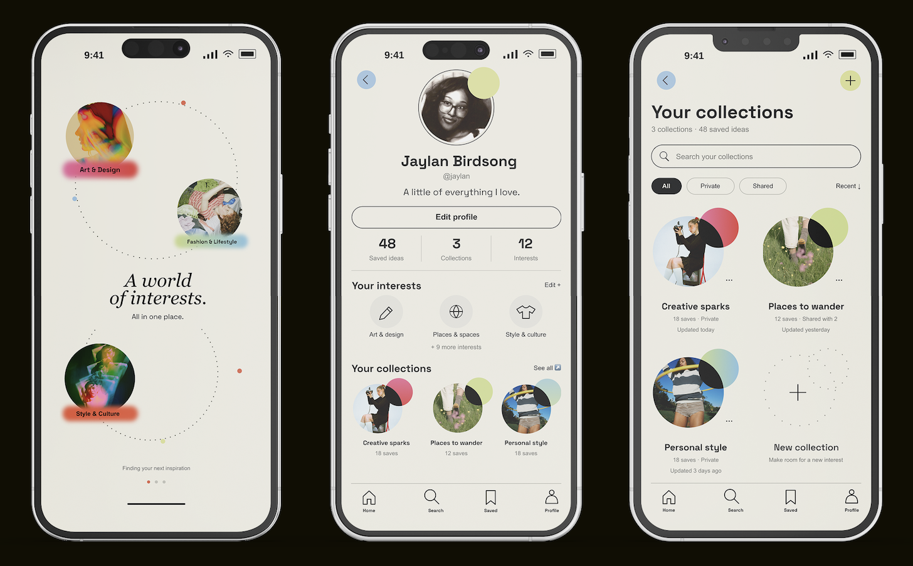
1 / 2
APPLICATION / 04
Digital Discovery
The Orbit app brings art, design, places, and culture into one visual browsing experience. Image-led grids and circular collections help users find connections between the things they’re drawn to.
Digital Discovery
04 / 10
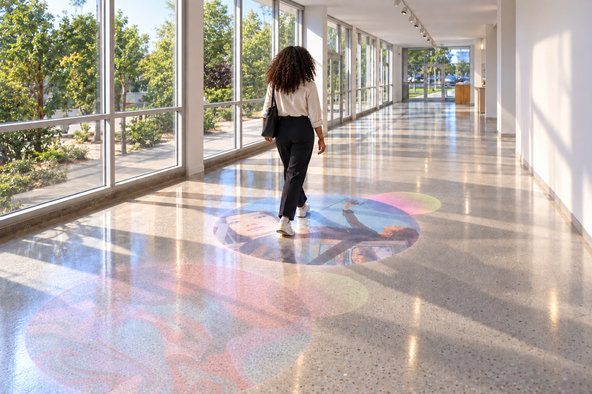
APPLICATION / 05
Interactive Floor
As someone walks through the hallway, circular projections reveal new images beneath their feet. The floor turns an everyday walk into a moment of discovery, with each step uncovering a different interest.
Interactive Floor
05 / 10
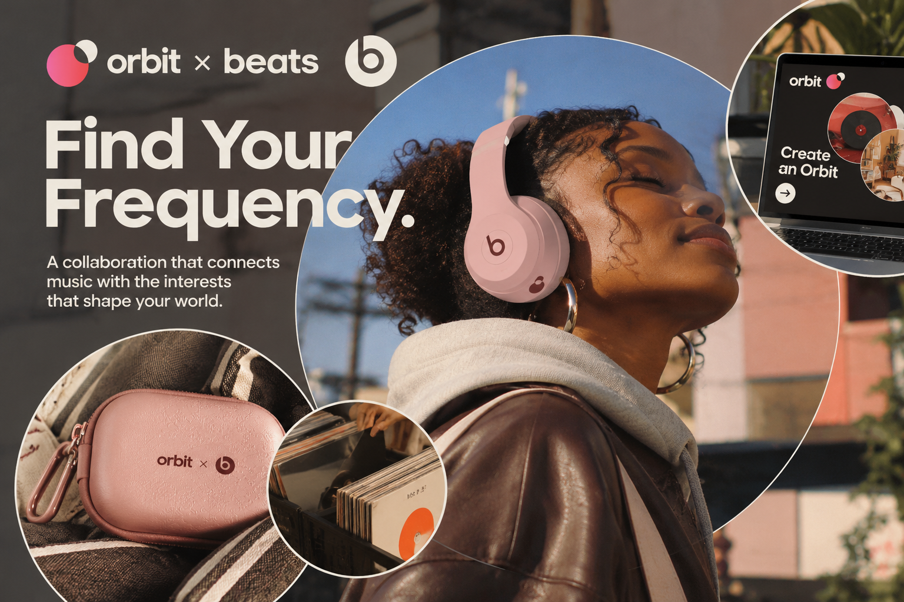
APPLICATION / 06
Orbit × Beats — Sound Meets Discovery
The Orbit × Beats collaboration explores the connection between music, identity, and personal interests. Built around the idea that sound shapes how we experience the world, the collaboration encourages users to discover new music and explore the interests, communities, and creative influences connected to it. Through immersive listening experiences, personalized discovery, and co-branded headphones, Orbit and Beats transform music into another way of expressing individuality and connecting with the world around us.
Orbit × Beats — Sound Meets Discovery
06 / 10
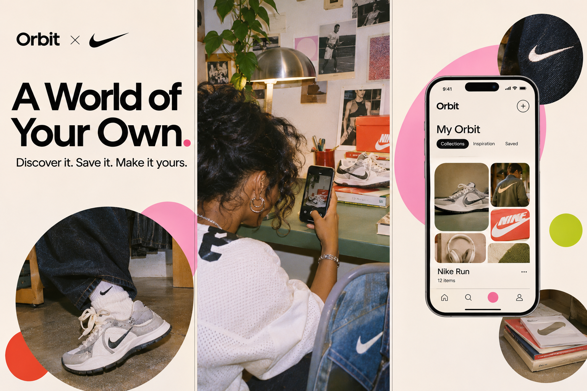
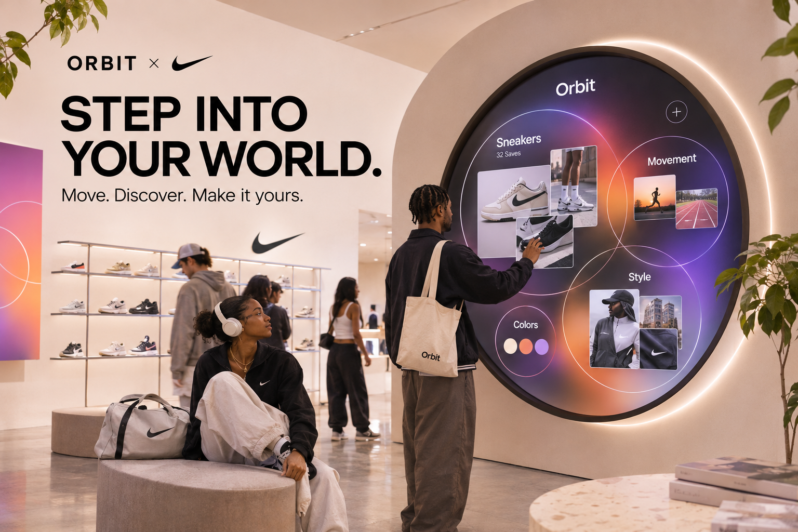
1 / 2
APPLICATION / 07
Orbit × Nike
The Orbit × Nike collaboration celebrates movement as a form of self-expression, connecting physical activity with personal interests and community. Rather than focusing solely on athletic performance, the collaboration highlights the different ways people move, from running and sports to everyday exploration. Through interactive experiences, curated interest-based communities, and co-branded products, Orbit and Nike encourage individuals to discover new activities, build connections, and find their own rhythm. Both are conceptual brand collaborations that extend Orbit’s identity beyond the digital platform into everyday experiences, connecting people through shared interests, creativity, and discovery.
Orbit × Nike
07 / 10
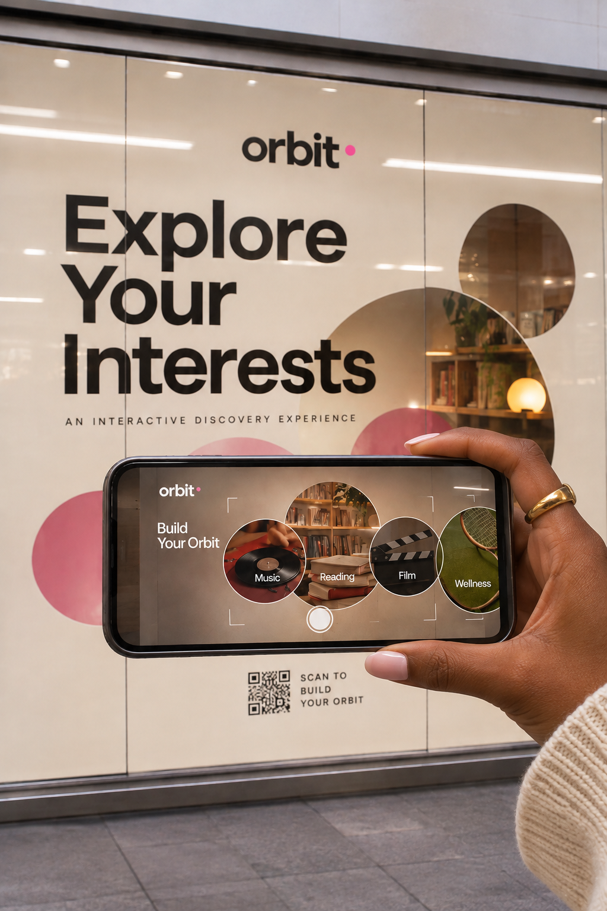
APPLICATION / 08
Orbit VR Storefront — Step Into Your World
The Orbit VR Storefront transforms traditional retail into an immersive experience where digital discovery meets the physical world. Through interactive virtual reality technology, visitors can explore personalized environments inspired by their interests, from music and fashion to art and design. Each experience encourages curiosity and exploration, allowing individuals to discover new connections beyond a screen. The storefront brings Orbit’s mission to life by turning personal interests into interactive spaces that feel unique to each visitor.
Orbit VR Storefront — Step Into Your World
08 / 10
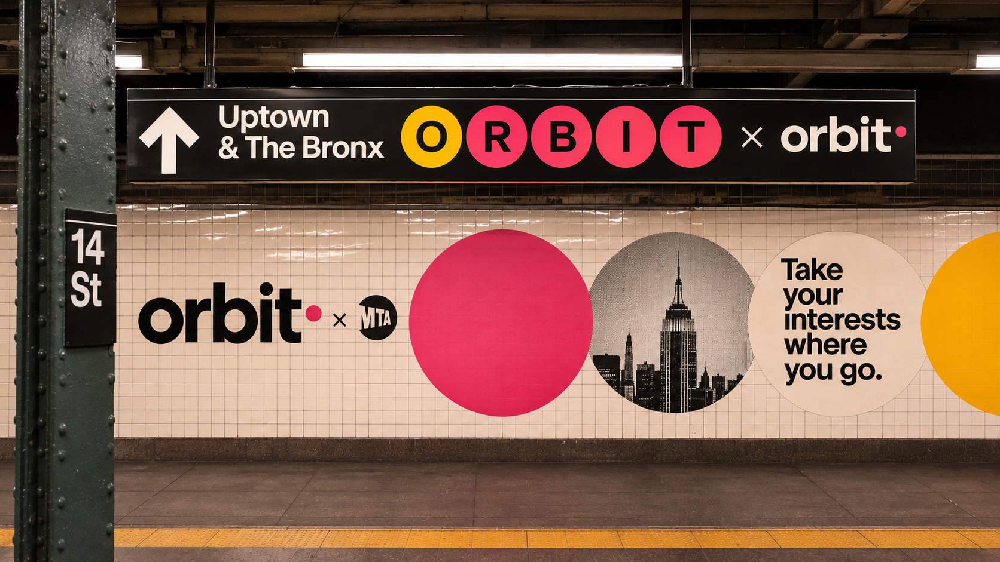
APPLICATION / 09
Orbit × MTA
The Orbit × MTA collaboration transforms New York City’s subway stations into spaces for discovery, connecting the city’s diverse communities through shared interests. Inspired by the MTA’s iconic wayfinding system and Massimo Vignelli’s design legacy, the collaboration integrates Orbit’s visual identity into existing station environments while respecting their original architecture and signage. Through branded installations, circular graphics, and interest-inspired visuals, everyday commutes become opportunities for curiosity and connection. The collaboration reflects Orbit’s belief that discovery can happen anywhere, encouraging New Yorkers to carry their interests wherever they go.
Orbit × MTA
09 / 10
APPLICATION / 10
Orbit — A World in Motion
The Orbit home profile features an interactive circular element that continuously orbits around the user’s profile, representing the passage of time and the ongoing nature of discovery. Inspired by planetary movement, the smaller circle travels around the central profile, bringing Orbit’s signature visual identity to life through subtle motion. This interaction reinforces the idea that each individual is at the center of their own world, with interests and experiences constantly moving around them.
Orbit — A World in Motion
10 / 10
03 / THE DESIGNERABOUT THE PROJECT
About Orbit
Orbit is a visual discovery platform built around the idea that our interests shape the way we see and experience the world. From music, fashion, and art to the places we visit and the objects we collect, everything we are drawn to becomes part of our own personal universe. Orbit creates a space where these interests can exist together, encouraging users to explore beyond what they already know and discover unexpected connections along the way. Unlike traditional social platforms that center around popularity, trends, and social validation, Orbit places curiosity and individuality at the forefront. It encourages people to discover inspiration organically, collect visual references, and build a world that reflects their evolving identities. At its core, Orbit celebrates the idea that no two people see the world in exactly the same way. Our interests are constantly growing, overlapping, and influencing one another, creating connections that are uniquely our own.
ORBIT / EDIT MODE
Click highlighted text to edit. Select an image placeholder to upload your work.
Homepage backgroundImage displays at full color with no overlay. Use a wide, high-resolution image.
Brand artwork
Save draft stores changes on this device. Download updated website creates a self-contained index.html with your images embedded. Upload that index.html to GitHub to publish. Large image collections may create a large HTML file.